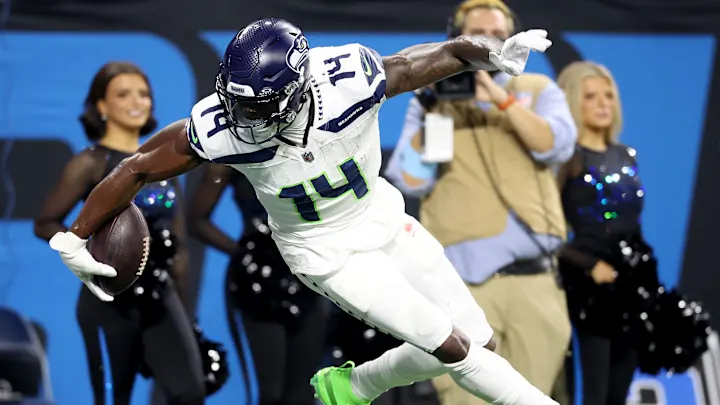
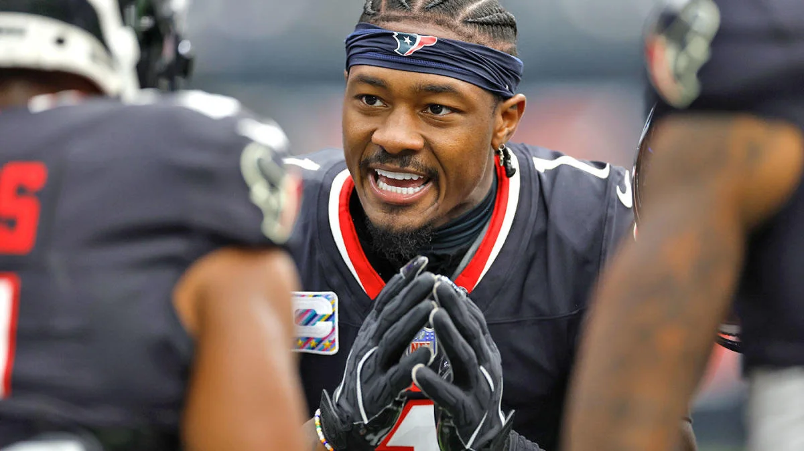
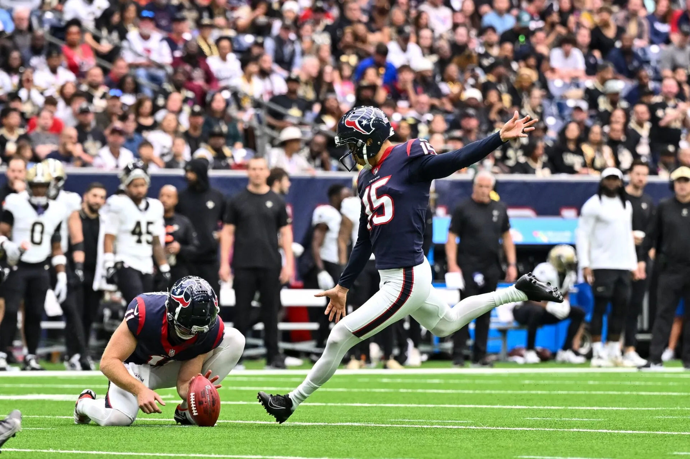
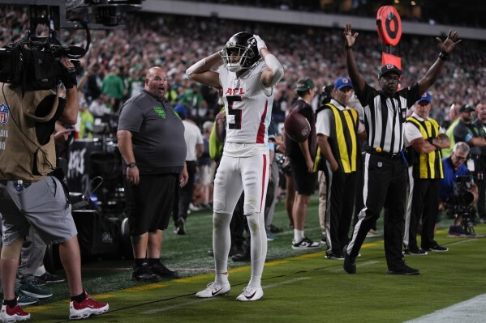
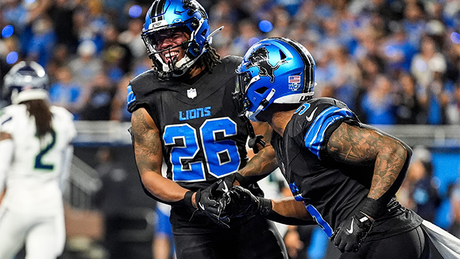
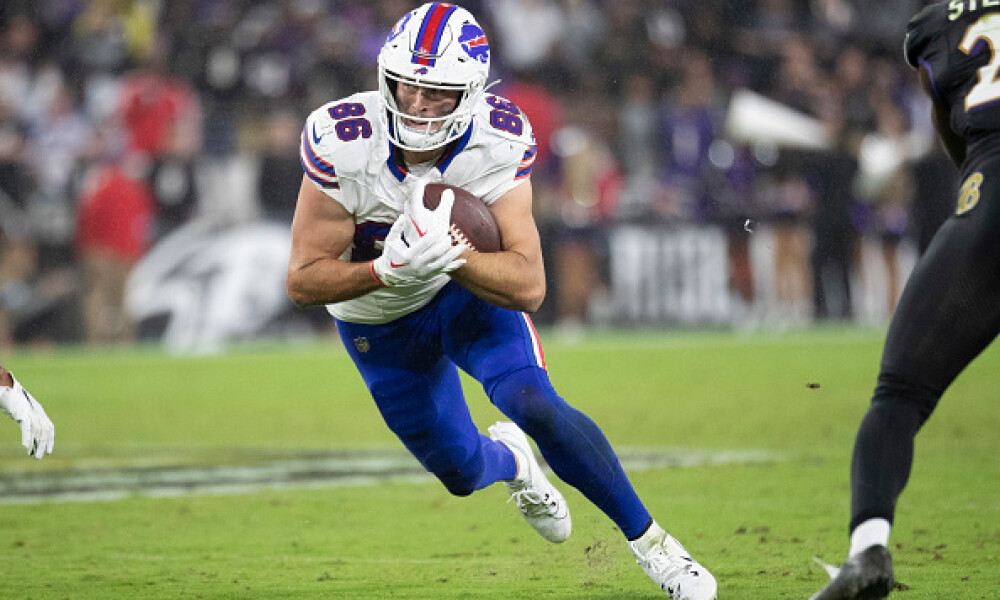
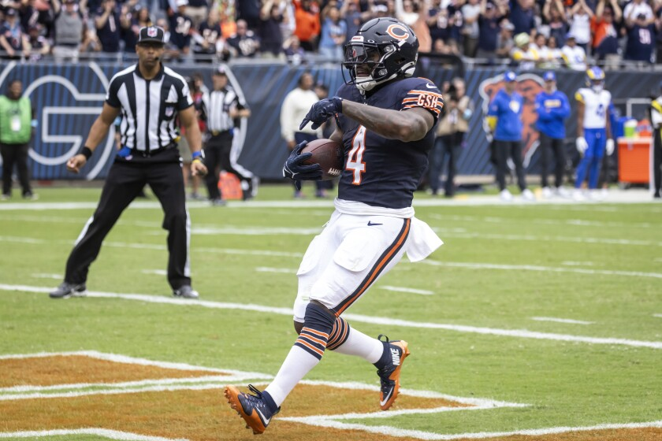
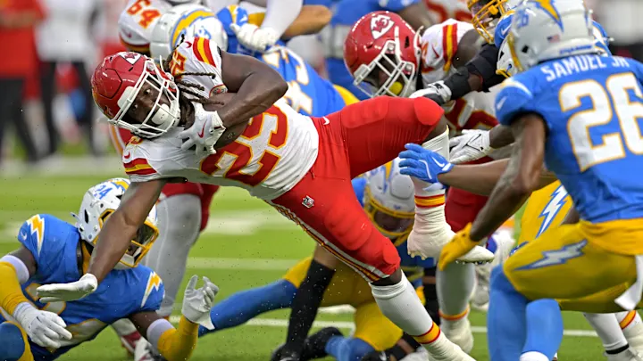
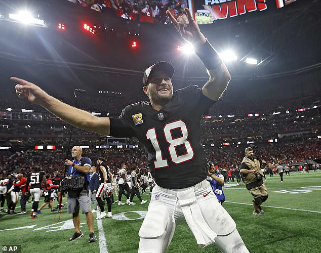

Welcome to our first bye week - love to see the active trade market!
Looking back at last week, the MOTW really was Kris and Matt! Congrats Kris, on getting in the win column! Tony, your time will come, I’m sure.
Matchup of the Week: Achane’s Cocaine Train (1-3) v. Sweet Brotha Numpsay (3-1) If CJ can figure out how to use Sleeper and get a defense for MNF, the projections are tight. Newcomers Swift and Jacobs take the RB spots for Chris, while Pangy comes out of the gates hot with a huge game from Drake London. Should be a good one.
Waiver Wire Wizards and Weiners: * Wizard: CJ - D’Andre Swift $51 - Spendy but as soon as he inserted him in the lineup, I liked that team a lot more. * Weiner: CJ - Dontayvion Wicks $24 - Looks to be in a great spot, but the only other bid was $3. * Wizard: ME! - Trey Sermon $3 - Starting RB for the Colts with that O-Line!? Sign me up. (still not confident lol) * Weiner: Tony - Justin Tucker $1 - Best kicker of all time besides Brandon Aubrey. Could this be a Wizard, still?

1. PJ (3-1, PF: 500.42 , $31 FAAB) ⬆️
I really like the depth on this team, but what’s up with Breece Hall? Let’s put the #1 curse on PJ. This DK play is gonna haunt PJ eternally.

2. Andy (3-1, PF: 512.04, $29 FAAB) ↔️
It’s been a busy week for the big dog, who’s making moves. Aaron Jones is already out from that first trade, though—ouch. Diggs’s revenge game looms large this week.

3. Seif (3-1, PF: 574.86, $35 FAAB) ⬇️
When you lose to #10, you drop two spots. When you lose Nabers, you hope Ceedee can carry you a week. (Assuming Nabers is back, that concussion looked nasty)

4. Pangy (3-1, PF: 464.06, $9 FAAB) ⬆️⬆️⬆️
The Yung Pangys have won three straight and are getting the job done. That FAAB has been money well spent, apparently. Can he make it four in a row in the MOTW?

5. Jake (3-1, PF: 444.54, $59 FAAB)
I scored 99 points in two straight wins, and now my Lions are on a bye, eek. I’m just hoping to leave this week healthy, as I look ahead to Kupp’s return in Week Seven.

6. Neil (2-2, PF 343.20, $94 FAAB) ↔️
They’ve lost two straight, but they’re still a good-looking team. As I started to type here, Garret Wilson just scored a touchdown, and he has 17 targets—not bad. It’s easily been his best game, but Rodgers’s health seems to be teetering on each play.

7. Kris (1-3, PF 413.06, $70 FAAB) ⬆️⬆️⬆️
In true Kris fashion, he gets the W over #1 after dropping Swift. Then trades away Kelce, right after he looks most valuable with Rice going down. Then he sits Mooney who will never have as good of a game as he had on TNF. The NFL script isn’t as good as the Kris script, haha. 🫶
8. CJ (1-3, PF 452.76, $27 FAAB) ⬇️⬇️
With this morning’s defense drama, I had to drop him a bit - though I’m now envisioning those defenses that weren’t picked up to all be terrible and it to work out. I expect a bounce back here. But I’m also not sure if he knows that you can’t start seven RBs. Scared money don’t make money.

9. Joel (1-3, PF 422.06, $61 FAAB) ⬇️
Even though he’s starting two Jags, yeesh, Joel’s in a nice spot to get a W against a struggling Tony squad, who’s only projected to scores 87 (with some guys already played.) With Cook coming down to earth last week, Joel will need to lean on Hunt, which is just a little scary, but I thought he looked pretty good last week.
Thank you for the $6 FAAB 😂
10. Tony (0-4, 383.70, $71 FAAB) ⬇️
The good thing is that we know how well Tony fills out a lil slutly uniform. Because uh, this roster don’t look so good. If you gotta go down, at least you’re doing it with Tucker 💜
Good luck to everyone besides Andy!
“They’re playing that song about the swag, the surf … I was like, ‘This is pretty sweet.’”
- Kirk Cousins

(I know this is from Week Five, but how could I not?)